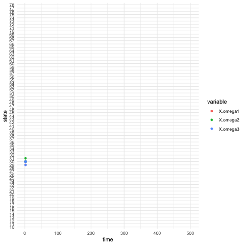
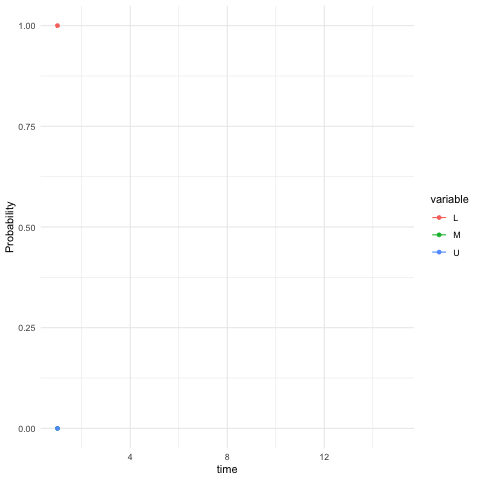
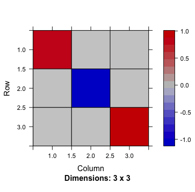
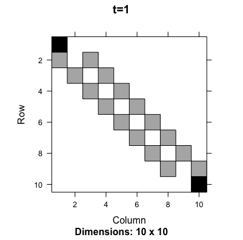
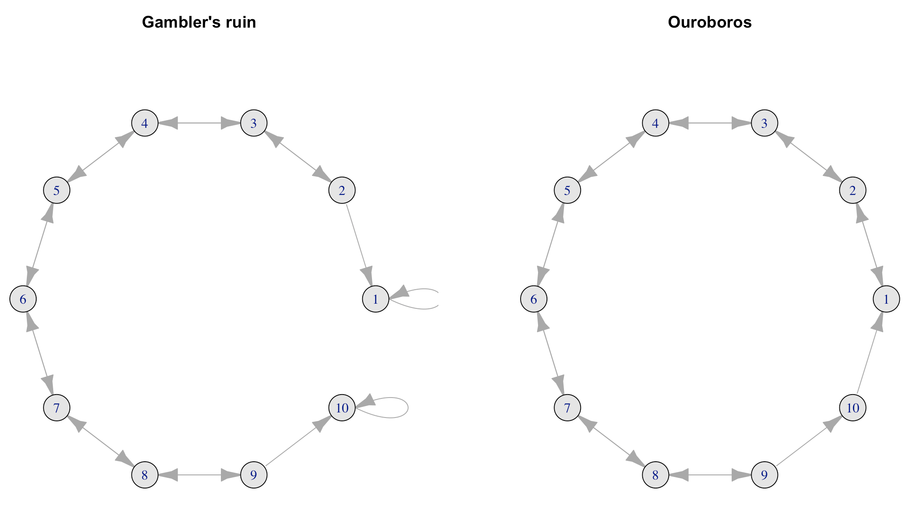
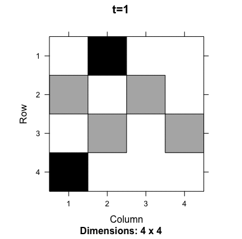
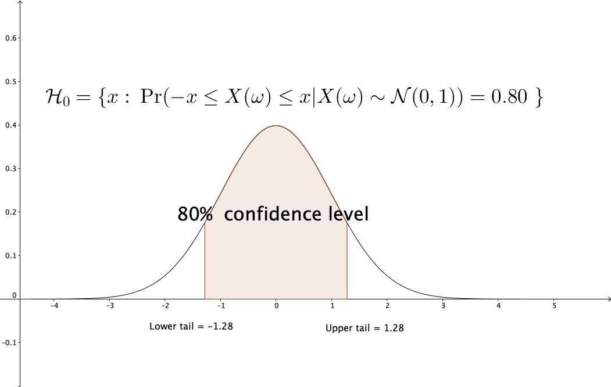
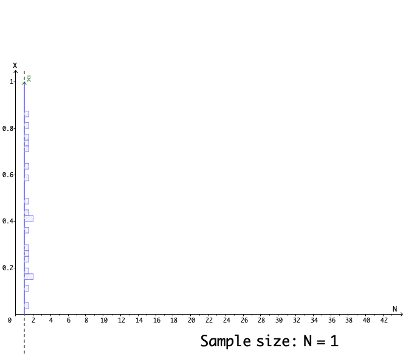
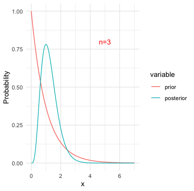

13 Uncertainty in Multiple Dimensions
Our states are somehow dependent on and co-varies with our experiences, epistemic and aesthetic norms, or, more generally, our changeable roles in this world. On the other hand, the world has various paradigms, cultures, and belief systems that attribute different values to an individual’s state. Interference with the world could make one’s state an uncertain object.
In reality, when we consider the uncertainty of multiple random events ahead that co-vary with each other, we tend to find out a law to characterize these events in a unified way. It turns out that vectors and matrices are indispensable to construct the characterizations for this joint venture.
13.1 Multivariate Distributions
The previous examples in section 12.4 of data vectors didn’t involve any discussion about uncertainty. In reality, most datasets contain (more or less) some random features. When uncertainty enters one’s concern, one may think that behind all the uncertain random events lie certain probabilities laws. The event which one actually observes in a single instance could always be referred to as a collection of events that might have happened. In other words, if one observes a single event, say \(x_t\) at time \(t\) from a random experiment, it is possible that at time \(t\) the experiment can generate a set of possible outcomes. It is by chance that the value \(x_t\) was generated, but if the experiment runs in a “parallel” world at time \(t\), the outcome \(x_t\) could be different from the current one.245 This argument relates to the many-worlds interpretation or many-minds interpretation in quantum mechanics where nondeterministic observations root in the system that “selects” a single value in the range of possible values.
By this argument, we can treat \(x_t\) at every time \(t\) as a realization of a random variable \(X_t(\omega)\). And since the time series data vector contains a series of realizations, say \([x_1,\dots,x_T]^\top\), we have to consider this whole vector to be a realization from a random vector \(\mathbf{X}(\omega) =[X_1(\omega),\dots,X_T(\omega)]^\top\).246 The \(\omega\), as the use in chapter 9.4, stands for a deeper invisible state that generates the outcome of the random variable. Any attempt to understand the underlying law of such data vectors becomes an attempt to understand the underlying joint probability law of \(X_1(\omega),\dots,X_T(\omega)\), namely \(\mathbb{P}(X_1,\dots,X_T)\).
The probability distribution referring to a joint probability of a random vector is called the multivariate distribution. We explore some of the multivariate distribution properties through one of the most important multivariate distributions, the multivariate normal (Gaussian) distribution. Recall that a standard normal random variable \(X\sim \mathcal{N}(0,1)\) has the density function \(f(x)=\frac{1}{\sqrt{2\pi}}\exp(x^2)\) for \(x\in\mathbb{R}\). Now let \(X_1(\omega),\dots X_T(\omega) \sim \mathcal{N}(0,1)\) be independent random variables. The joint density of such a vector \(\mathbf{X}(\omega)=[X_1(\omega),\dots,X_T(\omega)]^\top\) is \[ \begin{align*} f(\mathbf{x})&=\prod_{t=1}^{T}f(x_{t})=\frac{1}{(2\pi)^{T/2}}\exp\left\{ -\frac{1}{2}\sum_{t=1}^{T}x_{t}\right\} \\ &=\frac{1}{(2\pi)^{T/2}}\exp\left\{ -\frac{1}{2}\mathbf{x}^{\top}\mathbf{x}\right\}. \end{align*} \] which is the standard multivariate normal density.
 Figure 13.1: Joint density of two independent normal random variables
Figure 13.1: Joint density of two independent normal random variables
The independence property splits the joint density into the product of individual densities \(f(\mathbf{x})=\prod_{t=1}^{T}f(x_{t})\). The assumption of independence may be violated in many situations. In the dynamical environments, an event \(X_{t}(\omega)\) is followed by another event \(X_{t+1}(\omega)\), so it is natural to think that the arrow of time attaches some kind of the dependent chain between these two successive events. From another perspective, when one suspects that interaction happened between \(Y(\omega)\) and \(X(\omega)\), it is natural to treat \(Y(\omega)\) and \(X(\omega)\) jointly as a vector and assume some degree of dependence between these two random elements.247 Essentially, since we consider that the variables \(\{X_1(\omega),\dots,X_T(\omega)\}\) or \(\{Y(\omega), X(\omega)\}\) depend on the same invisible state \(\omega\), the dependence may come with the underlying features that are shared by all the variables generated by \(\omega\). For example, the conditional structure \(Y|X\) used in probabilistic causation simply assumes the dependence exists.248 If \(Y\) and \(X\) are independent, then the conditional probability \[ \begin{align*} \mathbb{P}(Y|X)= \frac{\mathbb{P}(X,Y)}{\mathbb{P}(X)}\\ =\frac{\mathbb{P}(X)\mathbb{P}(Y)}{\mathbb{P}(X)}=\mathbb{P}(Y) \end{align*} \] will not reveal any convincing causal relation between \(Y\) and \(X\).
Dependence or independence is a condition regarding the joint probability law. For any normal distributed random variable \(X\sim \mathcal{N}(\mu,\sigma^2)\), the whole distribution is characterized by the mean \(\mu\) and the variance \(\sigma^2\), namely a first and a second order information criterion respectively. The covariance is a second order information criterion to depict the dependence between any two random variables. Furthermore, the covariance matrix of any random vector \(\mathbf{X}(\omega)\) gives a characterization of the dependence amongst any two random variables \(X_i, X_j\) of the vector \(\mathbf{X}(\omega)\).
- Covariance, correlation, and multivariate normal density : Let \(X_i\) and \(X_j\) be random variables with means \(\mu_i\) and \(\mu_j\) and variance \(\sigma_i^2\) and \(\sigma_j^2\). The covariance between \(X_i\) and \(X_j\) is given by \[\mbox{Cov} (X_i , X_j) = \mbox{Cov} (X_j , X_i) =\mathbb{E}[(X_i-\mu_i)(X_j-\mu_j)],\] and the correlation between \(X_i\) and \(X_j\) is defined by \[\rho_{ij} = \rho_{ji} = \frac{\mbox{Cov}(X_i,X_j)}{\sigma_i \sigma_j}.\] The covariance matrix random vector \(\mathbf{X}(\omega)=[X_1, \dots, X_T]^\top\) is given by \[ \begin{align*} \mbox{Var}(\mathbf{X}(\omega))&=\left[\begin{array}{cccc} \mbox{Var}X_{1} & \mbox{Cov}(X_{1},X_{2}) & \cdots & \mbox{Cov}(X_{1},X_{T})\\ \mbox{Cov}(X_{2},X_{1}) & \mbox{Var}X_{2} & \cdots & \mbox{Cov}(X_{2},X_{T})\\ \vdots & \vdots & \vdots & \vdots\\ \mbox{Cov}(X_{T},X_{1}) & \mbox{Cov}(X_{T},X_{2}) & \cdots & \mbox{Var}X_{T} \end{array}\right] \\ &=\left[\begin{array}{cccc} \sigma_{1}^{2} & \sigma_{12} & & \sigma_{1T}\\ \sigma_{21} & \sigma_{2}^{2} & & \sigma_{2T}\\ \vdots & \vdots & \ddots & \vdots\\ \sigma_{T1} & \sigma_{T2} & \cdots & \sigma_{T}^{2} \end{array}\right]=\left[\begin{array}{ccc} \sigma_{1}^{2} & \rho_{12}\sigma_{1}\sigma_{2} & \dots\\ \rho_{12}\sigma_{1}\sigma_{2} & \sigma_{2}^{2} & \dots\\ \vdots & \vdots & \ddots \end{array}\right]=\Sigma \end{align*} \]
Suppose any \(X_i\) in \(\mathbf{X}(\omega)\) is a normal random variable. In this case, \(\mathbf{X}(\omega)\) follows the multivariate normal distribution such that \(\mathbf{X}(\omega)\sim\mathcal{N}\left(\mathbf{\mu},\:\Sigma\right)\), where \(\mathbf{\mu}=[\mu_1,\dots,\mu_T]^\top\) is the mean vector, namely \(\mathbf{\mu}\), and \(\Sigma\) is the covariance matrix. The density function of \(\mathbf{X}(\omega)\) is given by \[f(\mathbf{x})=\frac{1}{(2\pi)^{T/2}|\Sigma|^{1/2}}\exp\left\{ -\frac{1}{2}(\mathbf{x}-\mathbf{\mu})^{\top}\Sigma^{-1}(\mathbf{x}-\mathbf{\mu})\right\}.\]
 Figure 13.2: Correlation (dependence pattern) changes of a bivariate normal density
Figure 13.2: Correlation (dependence pattern) changes of a bivariate normal density
It is easy to show that for any real vector \(\mathbf{a}\) and \(\mathbf{b}\) and the random vector \(\mathbf{X}(\omega) \sim \mathcal{N}(\mathbf{\mu}, \Sigma)\), the expectation and (co)variance operation for a linear/affine transformation have the following results \(\mathbb{E}[\mathbf{a}^\top \mathbf{X}(\omega) + \mathbf{b}]=\mathbf{a}^\top \mathbf{\mu} + \mathbf{b}\), and \(\mbox{Var}(\mathbf{a}^\top \mathbf{X}(\omega) + \mathbf{b})=\mathbf{a}^\top \Sigma \mathbf{a}\). These results are analogous to those in the scalar cases. One can extend the results for any real matrix \(\mathbf{A}\): \(\mathbb{E}[\mathbf{A} \mathbf{X}(\omega)]=\mathbf{A} \mathbf{\mu}\), and \(\mbox{Var}(\mathbf{A} \mathbf{X}(\omega))=\mathbf{A} \Sigma\mathbf{A}^\top\). These relations indicate that it is possible to construct any multivariate normal distribution by the standard one. The idea is to decompose the covariance matrix as a product, i.e., \(\Sigma=\mathbf{A}\mathbf{A}^\top\). With this decomposition, we can represent any \(\mathbf{X}(\omega) \sim \mathcal{N}(\mathbf{\mu}, \Sigma)\) by \[ \mathbf{A}\mathbf{W}(\omega) + \mathbf{\mu},\,\, \mbox{ where } \mathbf{W}(\omega) \sim \mathcal{N}(0, \mathbf{I})\] where \(\mathbf{W}(\omega)\) is the standard multivariate normal random vector. The decomposition \(\Sigma=\mathbf{A}\mathbf{A}^\top\) utilizes several properties of the covariance matrix. We are going to examine these properties one by one.
A critical property of the variance is that \(\mbox{Var}(X)>0\) for any random variable \(X\). The covariance of any two random variables can be either positive or negative because the dependence can come from a positive or negative relation. So we cannot say that all entries of the covariance matrix \(\mbox{Var}(\mathbf{X}(\omega))\) are positive. But \(\mathbf{a}^\top \Sigma \mathbf{a}\) must be non-negative for any real non-zero vector \(\mathbf{a}\).249 Otherwise, we may have \(a^2_i\mbox{Var}(X_i)<0\) at some entry \(X_i\). As \(a^2_i\) is non-negative, we have \(\mbox{Var}(X_i)<0\) for a random variable \(X_i\). This result contradicts with the property of the variance operator. Any matrix satisfying \(\mathbf{a}^\top \Sigma \mathbf{a}\geq 0\) for non-zero real vector \(\mathbf{a}\) is called a positive semi-definite matrix.250 If \(\mathbf{a}^\top \Sigma \mathbf{a}> 0\) for all non-zero \(\mathbf{a}\), then \(\Sigma\) is positive definite.
The eigenvalues of the positive (semi-)definite matrix are real positive numbers. Let \(\lambda\) be an eigenvalue of \(\Sigma\), and let \(\Sigma \mathbf{v}=\lambda \mathbf{v}\) for some non-zero eigenvector \(\mathbf{v}\). It is obvious to see that \[\mathbf{v}^{\top}\Sigma\mathbf{v}=\mathbf{v}^{\top}\lambda \mathbf{v}=\lambda\|\mathbf{v}\|^{2}.\] As \(\mathbf{v}^{\top}\Sigma\mathbf{v}\geq 0\) by the definition of a positive (semi-)definite matrix, \(\lambda\|\mathbf{v}\|^{2}\geq 0\). Because \(\|\mathbf{v}\|^{2}\geq 0\), we can see that \(\lambda\) is a real positive number.
In addition, we can see that the covariance matrix \(\Sigma\) is symmetric. Recall that eigenvalue-eigenvector decomposition \(\Sigma=\mathbf{V}\Lambda \mathbf{V}^{-1}\) where \(\Lambda\) is the diagonal eigenvalue matrix. By the transposed operations, we have \[\Sigma^\top=(\mathbf{V}\Lambda \mathbf{V}^{-1})^\top = (\mathbf{V}^{-1})^\top \Lambda (\mathbf{V})^\top\] where \(\Lambda=\Lambda^\top\) by the diagonal property. The symmetry of \(\Sigma\) gives \(\mathbf{V}\Lambda \mathbf{V}^{-1}=(\mathbf{V}^{-1})^\top \Lambda (\mathbf{V})^\top\) or say \[\Lambda = \left(\mathbf{V}^{-1}(\mathbf{V}^{-1})^\top\right) \Lambda \left(\mathbf{V}^\top\mathbf{V}\right).\] One can infer that \(\mathbf{V}^\top\mathbf{V}=\mathbf{I}\) or \(\mathbf{V}^\top =\mathbf{V}^{-1}\). In other words, for a symmetric square matrix of real-valued entries, the eigenvector matrix \(\mathbf{V}\) is orthonormal \(\mathbf{V}^\top\mathbf{V}=\mathbf{I}\); namely, all vectors in \(\mathbf{V}\) are mutually orthogonal and all of the unit length.251 Any two vectors \(\mathbf{v}_i, \mathbf{v}_j\) in the matrix \(\mathbf{V}\) are orthogonal \(\mathbf{v}_i^\top \mathbf{v}_j=\left\langle \mathbf{v}_{i},\mathbf{v}_{j}\right\rangle =0\). The norm of any vector in \(\mathbf{V}\) is one: \(\|\mathbf{v}_i\|=\sqrt{\left\langle \mathbf{v}_{i},\mathbf{v}_{i}\right\rangle}=1\).
Now we can rewrite \(\Sigma=\mathbf{V}\Lambda \mathbf{V}^{-1}\) as \(\Sigma=\mathbf{V}\Lambda \mathbf{V}^\top\). Since \(\Lambda\) is a diagonal matrix with real positive entries \(\{\lambda_i\}\), we can represent \(\Lambda\) by \(\Lambda=\mathbf{S}\mathbf{S}\) where \(\mathbf{S}\) is also a diagonal matrix with real positive entries \(\{\sqrt{\lambda_i}\}\). Then the covariance matrix becomes \[\Sigma=\mathbf{V}\mathbf{S}\mathbf{S}^\top \mathbf{V}^\top=(\mathbf{V}\mathbf{S})(\mathbf{V}\mathbf{S})^\top.\] Let’s denote \(\mathbf{V}\mathbf{S}\) by \(\mathbf{A}\). We have the desired result \(\Sigma=\mathbf{A}\mathbf{A}^\top\). The result is called the Cholesky decomposition. It says that any symmetric positive semi-definite matrix \(\Sigma\) can be decomposed as a product of one matrix \(\mathbf{A}\) and its transpose \(\mathbf{A}^\top\).252 Such a matrix \(\mathbf{A}\) is analogous to the matrix version square root of a “positive” \(\Sigma\). Unlike a real positive number, whose expression of a square root is unique, the “square root” of \(\Sigma\) does not have a unique representation. For example, if one selects an orthonormal matrix \(\mathbf{U}\) such that \(\mathbf{U}\mathbf{U}^\top = \mathbf{I}\), then \[\Sigma = \mathbf{A}\mathbf{A}^\top=\mathbf{A}\mathbf{I}\mathbf{A}^\top=(\mathbf{A}\mathbf{U})(\mathbf{A}\mathbf{U})^\top\] is also a valid representation for \(\Sigma\).
The multivariate normal distribution of \(\mathbf{X}(\omega)\) gives a full description of the dependent structure amongst all normal random variables in the random vector \(\mathbf{X}(\omega)\). With the joint probability law, we can derive other useful dependent structures. For example, the conditional probability can induce the probabilistic causal relation as the conditional probability law implicitly treats the conditions as the (probabilistic) cause.
The calculation of multivariate conditional probability is non-trivial. Take a \(2N\)-dimensional multivariate normal random vector as an example. By splitting the vector into two subvectors, we have the following expression for the joint density \[ \begin{bmatrix} \mathbf{Y}(\omega) \\ \mathbf{X}(\omega) \end{bmatrix} \sim \mathcal{N} \left( \begin{bmatrix} \mathbf{\mu_y} \\ \mathbf{\mu_x} \end{bmatrix} , \begin{bmatrix} \Sigma_{11} & \Sigma_{12} \\ \Sigma_{21} & \Sigma_{22} \end{bmatrix} \right) \] where \(\Sigma_{11}\), \(\Sigma_{22}\) are the covariance matrices of the random vectors \(\mathbf{Y}(\omega)\) and \(\mathbf{X}(\omega)\), respectively, and \(\Sigma_{12} = \Sigma_{21}\) is \(\mbox{Cov}(\mathbf{Y}(\omega), \mathbf{X}(\omega))\).
If we want to calculate the conditional density \((\mathbf{Y}|\mathbf{X})(\omega)\), then in principle we need to compute \(f(\mathbf{y}|\mathbf{x})=f(\mathbf{y}, \mathbf{x})/f(\mathbf{x})\).253 The full expression of the joint density function \(f(\mathbf{y}, \mathbf{x})\) contains the term \[ \left[\begin{array}{c} \mathbf{y}-\mathbf{\mu_{y}}\\ \mathbf{x}-\mathbf{\mu_{x}} \end{array}\right]^\top\left[\begin{array}{cc} \Sigma_{11} & \Sigma_{12}\\ \Sigma_{21} & \Sigma_{22} \end{array}\right]^{-1}\left[\begin{array}{c} \mathbf{y}-\mathbf{\mu_{y}}\\ \mathbf{x}-\mathbf{\mu_{x}} \end{array}\right] \] which requires to evaluate the inversion of the block matrices. Rather than fully involved in the conditional density’s derivation, we give the direct results of the conditional vector mean and conditional covariance matrix, and then consider why such results make sense. \[ \begin{align*} \mathbb{E}[\mathbf{Y}(\omega) | \mathbf{X}(\omega)=\mathbf{x}]&= \mathbf{\mu_y} + \Sigma_{12} \Sigma_{22}^{-1} \left( \mathbf{x} - \mathbf{\mu_x} \right),\\ \mbox{Var}[\mathbf{Y}(\omega) | \mathbf{X}(\omega) =\mathbf{x}] &= \Sigma_{11} - \Sigma_{12} \Sigma_{22}^{-1} \Sigma_{21}. \end{align*} \] The results show that the conditioning vector \(\mathbf{x}\) will adjust the first and the second-moment information criteria of dependent vector \(\mathbf{Y}(\omega)\).
This conditional covariance matrix \(\Sigma_{11} - \Sigma_{12} \Sigma_{22}^{-1}\Sigma_{21}\) is the Schur complement of \(\Sigma_{22}\). Similar to the block LU factorization, such a term is to eliminate the covariance blocks corresponding to the variables being conditioned upon. The main instrument \(\Sigma_{12} \Sigma_{22}^{-1}\) is to eliminate the dependence caused by \(\mathbf{X}(\omega)\).
Proof of the elimination
The conditional results of the mean vector and covariance matrix serve the foundation of estimating a dynamical system adaptively. We will see in [?]. For now, a quick application is to use the conditional results to recover the joint density.254 Any two dependent random variables \(X_2\) and \(X_1\) have the expression \[\mathbb{P}(X_2, X_1)=\mathbb{P}(X_2\,|\,X_1)\mathbb{P}(X_1),\] which tells how to compute the joint by the conditionals.
Simulate the bivariate normal random vector
13.2 Stochastic Process and Markov’s Principle
The sequence of random variables \(X_{1}(\omega),\dots X_{t}(\omega)\) refers to a stochastic process if one wants to emphasize that the index of the sequence indicates the successive steps.
- Filtered space, stochastic process : Filtered space is \((\Omega,\mathcal{F},\{\mathcal{F}_{t}\},P)\) where \((\Omega,\mathcal{F},P)\) is a probability space, \(\{\mathcal{F}_{t}:t\geq0\}\) is called the filtration, that is, an increasing family of \(\sigma\)-algebras of \(\mathcal{F}\) such that \[\mathcal{F}_{s}\subseteq\mathcal{F}_{t}\cdots\subseteq\mathcal{F}\] for all \(s<t\). A stochastic process, \(\{X(t,\omega),\, t\in\mathbb{R}^{+}\}\) for the continuous-time or \(\{X_{t}(\omega),\, t\in\mathbb{N}\}\) for the discrete-time, is a collection of random variables defined on a filtered space \((\Omega,\mathcal{F},\{\mathcal{F}_{t}\},P)\).255 More precisely, \(X(t,\omega)\) or \(X_{t}(\omega)\) is \(\mathcal{F}_{t}\)-measurable with the filtration \[\mathcal{F}_{t}=\underset{\mbox{continuous time}}{\underbrace{\sigma\left(\{X_{\tau}\}_{0<\tau\leq t}\right)}}\;\mbox{or }\\\mathcal{F}_{t}=\underset{\mbox{discrete time}}{\underbrace{\sigma(X_{0},X_{1},\dots,X_{t})}}.\] We also say \(\{X(t,\omega),\, t\in\mathbb{R}^{+}\}\) or \(\{X_{t}(\omega),\, t\in\mathbb{N}\}\) is adapted to the filtered space \((\Omega,\mathcal{F},\{\mathcal{F}_{t}\},P)\).
Figure 13.3: Three processes generated by the same probability law and the same initials but different deeper invisible states
- State space : From the calculus perspective (differential/difference equations), given the underlying \(\omega\), each variable \(X(t, \cdot)\) or \(X_{t}(\cdot)\) of the process is a state variable over time \(t\). At any time \(t\), all possible states of \(X(t, \omega)\) belong to the state space \((\mathcal{X}, \sigma(\mathcal{X}))\) where \[\mathcal{X}:=\left\{x\,|\,X(t,\omega)=x,\:\omega\in\Omega, t\in \mathbb{R}^{+}\right\}\] is the set of all possible states (realizations) for \(X(t,\omega)\).256 For the discrete time \(X_{t}(\cdot)\), the state space \((\mathcal{X}, \sigma(\mathcal{X}))\) has a similar form with \(\mathcal{X}:=\left\{x\,|\,X_t(\omega)=x,\:\omega\in\Omega, t\in \mathbb{N}\right\}\).
Discussion about the filter
Roughly speaking, a stochastic process is a collection of random variables indexed by time \(t\). A discrete-time stochastic process \(\{X_{1},\dots,X_{T}\}\) is simply a random vector whose random entries emerge following the arrow of time, namely a time series with random entities. However, the flowing time illuminates that the index number \(t\) can grow, and that the time series may not remain at a modest size. In this case, the joint probability law \(\mathbb{P}(X_{1},\dots,X_{T})\) may need to be characterized by a rather high dimensional multivariate distribution if \(t\) grows to a large enough number.258 For example, a \(10\)-dimensional multivariate normal joint density needs to specify \(55\) entries of its covariance matrix (half of the off-diagonal entries are identical). That is to say; the computational complexity will grow exponentially as the dimension grows. Nowadays, the length of a simple data vector can easily go beyond \(10^{3}\). The specification of the joint probability law in a high dimensional space may be so complex (in both theoretical and applicable aspects) that we need an alternative method to interpret the law.
One method of fighting with the growing complexity is to keep the law in a tractable representation by using conditioning.259 We can see that the filtration \(\{\mathcal{F}_{t}:t\leq T\}\) is generated by \(\{ X_t(\omega) \}_{0<t\leq T}\). Thus the dependent structure of the series \(\{ X_t(\omega) \}_{0<t\leq T}\) also comes from the conditioning of the historical information generated by \(\{ X_t(\omega) \}_{0<t< T}\). Recall that in the simulation of the bivariate normal random vector, we use two one-dimensional random variables by splitting the joint probability law into the conditionals, i.e., \(\mathbb{P}(X_{2},X_{1})=\mathbb{P}(X_{2}\,|\, X_{1})\mathbb{P}(X_{1})\). For a discrete-time stochastic process, we can recursively apply the splittings to the joint probability260 For a continuous-time stochastic process, the splitting trick generally does not work unless the probability law acquires some additional structure that behaves like an exponent, called semi-group. We will see it in sec[?]. \[\mathbb{P}(X_{1},\dots,X_{T})= \\ \mathbb{P}(X_{T}|X_{T-1},\dots X_{1})\mathbb{P}(X_{T-1}|X_{T-2},\dots X_{1})\cdots\mathbb{P}(X_{2}|X_{1})\mathbb{P}(X_{1}).\] The splitting works, but it does not completely resolve the complexity issue, as the conditional distributions \(\mathbb{P}(X_{T}|X_{T-1},\dots X_{1})\), \(\mathbb{P}(X_{T-1}|X_{T-2},\dots X_{1})\), etc., generally involve an intensive computation (like the one we saw in the multivariate normal case).
The splitting conditionals utilize the full history of the process up to the current step to determine the probability for the next step, which significantly complicates analysis. However, our sense of the passage of time leads us to arrange events in the following manner: the past of our memory just fades out when we proceed; our perceptions highly depend on our present feelings but not so much on the historical ones. Extending this idea to the conditionals, we can replace those long-term conditions by the short-term ones including one and only one conditioning variable: \[\mathbb{P}(X_{1},\dots,X_{T})=\mathbb{P}(X_{T}|X_{T-1})\mathbb{P}(X_{T-1}|X_{T-2})\cdots\mathbb{P}(X_{2}|X_{1})\mathbb{P}(X_{1}),\] where each conditional probability \(\mathbb{P}(X_{t+1}|X_{t})\) is about “one-step” transition, namely regarding the future evolution at time \(t\) depends only on the current state \(X_{t}\). The system is said to possess the Markov’s principle: a principle of alleviating the complicated long-term dependence by using the simple short-term substitutes. A stochastic process whose probability law satisfies the Markov’s principle is also called a Markov process.261 The Markov’s principle is not restrict to stochastic models. Most dynamical problems of our interests satisfy this principle. For instance, the deterministic iterative model \(\mathbf{x}_{t+1}=\mathbf{A}\mathbf{x}_{t}\), and the nonlinear iterative model \(\mathbf{x}_{t+1}=f(\mathbf{x}_{t})\) for some continous real-valued function \(f(\cdot)\) are Markov’s models due to the fact that the dynamics depends on the current state \(\mathbf{x}_{t}\), and that all the previous state \(\mathbf{x}_{t-1},\dots,\mathbf{x}_{1}\) are completely irrelevant in the current dynamical law. The automous ODE \(\frac{\mbox{d}\mathbf{x}(t)}{\mbox{d}t}=f(\mathbf{x}(t))\) also satisfies the principle for the differential \(\mbox{d}\mathbf{x}(t)/\mbox{d}t\). But the (solution) process \(\mathbf{x}(t)=\int_{0}^{t}f(\mathbf{x}(s))\mbox{d}s\) does not.
Markov’s principle views discrete-time dynamics as a chain of multiple transitions. Given the initial probability \(\mathbb{P}(X_1)\), the dynamics of the process \(\{ X_t(\omega) \}_{t=1,\dots, T}\) is completely described by the (one-step) transition probabilities \[\mbox{P}_{t}(x,\mathcal{A})=\Pr(\mbox{transit from } x \mbox{ to }\mathcal{A} \mbox{ at time }t)\\=\mathbb{P}\left(X_{t+1}(\omega)\in\mathcal{A}\,|\,X_{t}(\omega)=x\right)\] that are well defined for any appropriate initial state (of the transition) \(x \in \mathcal{X}\) and the target set (of the transition) \(\mathcal{A}\in \sigma(\mathcal{X})\), with \(\mbox{P}_{t}(x,\mathcal{X})=1\) at time \(t=1,2,\dots, T-1\). Any multiple steps of the transition can be presented as the integral of the transition probabilities. For example, the conditional probability of a two-step ahead transition is \[\begin{align*} \mathbb{P}(X_{t+2}\in \mathcal{A} | X_{t}=x) &= \int_{x' \in \mathcal{X}} \mathbb{P}(X_{t+2}\in \mathcal{A} | X_{t+1}=x') \mathbb{P}(X_{t+1}\in dx' | X_{t}=x) \\ &= \int_{x' \in \mathcal{X}} \mbox{P}_{t+1} (x',\mathcal{A}) \mbox{P}_{t} (x,dx'), \end{align*} \] where the intermediate step on the state variable \(X_{t+1}\) is “integrated out.”262 Note that the infinitesimal state \(dx'\) is measurable in \(\sigma (\mathcal{X})\). The discrete-time Markov process is also known as the Markov chain. The above integral equation is called the Chapman–Kolmogorov equation that identifies the joint probability law via chaining up the transition probabilities.
The transition probability is time-homogeneous if \[\mbox{P}_{t}(x,\mathcal{A})=\mbox{P}(x,\mathcal{A})\] for all \(t=1,\dots, T-1\). The identical transition probabilities then chain up the joint probability of the time-homogeneous Markov chain. The \((t+k)\)-step ahead Chapman-Kolmogorov equation of the time-homogeneous Markov chain is \[ \begin{align*} & \mathbb{P}(X_{t+k}\in \mathcal{A} | X_{1}=x) \\ &= \int_{x'\in\mathcal{X}} \mathbb{P}(X_{t+k}\in \mathcal{A} | X_{t}=x') \mathbb{P}(X_{t}\in \mbox{d}x' | X_{1}=x) \tag{13.1} \\ &= \int_{x_{t+k-1} \in \mathcal{X}}\cdots \int_{x_{2} \in \mathcal{X}} \mbox{P}(x_{t+k-1},\mathcal{A}) \cdots \mbox{P} (x_{2},\mbox{d}x_{3}) \mbox{P} (x,\mbox{d}x_{2}). \tag{13.2} \end{align*} \]
Many practical stochastic models satisfy the Markov’s principle. For example, AR(1) model of random variables, \(X_{t+1}=\phi X_{t}+\varepsilon_{t}\) is a Markov chain, as \(X_{t+1}\) is independent of \(X_{t-1},X_{t-2},\dots\), given the current value \(X_{t}=x\).263 The AR(\(k\)) model is also a Markov chain in the general sense, but in our context, we only consider the (first-order) Markov’s principle with the one-step ahead rather than \(k\)-step ahead transitions. However, we can always make an AR(\(k\)) model \(X_{t+1}=\phi_{1}X_{t}+\cdots\phi_{k}X_{t-k+1}+\varepsilon_{t}\) satisfy the (first-order) Markov’s principle by constructing a vector AR(1) model \(\mathbf{X}_{t+1} = \Phi \mathbf{X}_{t} +\mathbf{e}_t\) in terms of the multivariate vector \(\mathbf{X}_{t+1}=[X_{t+1}(\omega),\dots X_{t-k+1}(\omega)]^{\top}\) where \[\Phi=\left[\begin{array}{cccc} \phi_{1} & \cdots & \cdots & \phi_{k}\\ 1 & & 0 & 0\\ & \ddots & & \vdots\\ 0 & & 1 & 0 \end{array}\right]\] and \(\mathbf{e}_t = [\varepsilon_{t}, 0, \dots ,0]^\top\). Let’s consider a specific AR(1) model whose errors are normal random variables \(\varepsilon_t \sim \mathcal{N}(0,\sigma^2)\). Given the state value \(X_{t}(\omega)=x\), the linear representation of the normal random \(\varepsilon_t\) tells that \(\phi x +\varepsilon_t \sim \mathcal{N}(\phi x, \sigma^2)\). So the conditional probability \(\mathbb{P}(X_{t+1} \in \mathcal{A}| X_{t}=x)\) of this AR(1) has the transition probability \(\mbox{P}_t(x,\mathcal{A})=\Pr (\mathcal{N}(\phi x, \sigma^2)\in \mathcal{A})\).
Markov’s principle will simplify a surprisingly wide variety of phenomena if we only consider the state space of discrete random variables. That is, all possible states are discrete states. Then the transition probability for the Markov chain can be expressed compactly by a probability transition matrix.
A stochastic matrix is a square matrix \(\mathbf{P}\) with entries \(\{p_{ij}\}\) such that \(p_{ij}\geq0\) for all \(i,j\), and for each row \(i\), \(\sum_{j}p_{ij}=1\). This matrix becomes the probability transition matrix for the Markov chain if each entry represents the probability of a one-step transition amongst the states. Let’s illustrate this matrix through a social mobility model. Sociologists broadly categorize the population of a country into upper- (U), middle- (M), and lower (L)-class brackets. One of their concerns is to monitor the movement of successive generations among these three classes. We can model these three classes as three states. Let \(X_t(\omega)\) be the class for the \(t\)-th generation of a family. Then the state space of \(X_t(\omega)\) is \((\mathcal{X}, \sigma(\mathcal{X}))\) with \(\mathcal{X}=\{\mbox{L}, \mbox{M}, \mbox{U}\}\). Markov’s principle implies that the class of any generation does not depend on the ancestry but only on the class of its parent generation. If we assume that this the social mobility transition pattern holds for any generation \(t\) in the family, then \(X_t(\omega)\) is a time-homogeneous Markov chain. The time-homogeneous transition probabilities \(\mbox{P}(x,x')=\mathbb{P}\left(X_{t+1}(\omega)=x'\,|\,X_{t}(\omega)=x\right)\) for \(x,x'\in \{\mbox{L}, \mbox{M}, \mbox{U}\}\) is contained in the following table
| \(X_{t} \backslash X_{t+1}\) | \(\mbox{L}\) | \(\mbox{M}\) | \(\mbox{U}\) |
|---|---|---|---|
| \(\mbox{L}\) | 0.45 | 0.5 | 0.05 |
| \(\mbox{M}\) | 0.15 | 0.65 | 0.2 |
| \(\mbox{U}\) | 0 | 0.5 | 0.5 |
In addition, if we label \(\mbox{L}=1\), \(\mbox{M}=2\), \(\mbox{U}=3\), then we can use a probability transition matrix to present the previous table: \[\mathbf{P}=[p_{ij}]_{1\leq i,j \leq 3} = \left[\begin{array}{ccc} 0.45 & 0.5 & 0.05\\ 0.15 & 0.65 & 0.2\\ 0 & 0.5 & 0.5 \end{array}\right]\] where \(p_{ij}=\mathbb{P}(X_{t+1}=j|X_{t}=i)\) represents the probability of a one-step transition from state \(i\) to state \(j\) at any generation \(t\).
 Figure 13.4: Graphic representation of the probability transition matrix
Figure 13.4: Graphic representation of the probability transition matrix
Sometimes, it more straightforward to visualize the probability transition matrix through its graphic representation. The states are the nodes in the graph, and each probability entry is the flow between two nodes. That is, a (probabilistic) flow departs from the vertex \(i\) and enters the vertex \(j\) with the weight \(p_{ij}\).264 The reason for existing graphic representation for each Markov chain is that any complete network is a chain. Recall that a graph or a network corresponds to a collection of order pairs \((\mathcal{V},\mathcal{E})\). In the set-theoretic sense, a chain means a totally ordered set. The completeness here refers to the fact that \((\mathcal{V},\mathcal{E})\) gives a totally ordered set: namely, any two vertices in the network can be decided whether they are connected or not.
Code
The Chapman-Kolmogorov equation for each time-homogeneous Markov chain now is simplified as a matrix-matrix multiplication \[ \begin{align*} \mathbf{P}^{k+t}&=\mathbf{P}^{k}\mathbf{P}^{t} \tag{13.3} \\ &=\underset{k+t}{\underbrace{\mathbf{P}\cdots\mathbf{P}}} \tag{13.4} \end{align*} \] where \(p^{t+k}_{ij}=\sum_{s=1}^{3}p^{k}_{is}p^{t}_{sj}\) for states \(i, j\) and the state \(s\) stands for the intermediate state that can take any of the three possibilities. One can find that equation (13.3) of the discrete state space is analogous to the Chapman-Kolmogorov equation (13.1) of the continuous state space, and (13.4) corresponds to (13.2). To derive the above result, let’s consider the meaning of \(\mathbf{P}^2\). Notice that the meaning of \(p_{is}p_{sj}\) is \[\begin{align*} p_{is}p_{sj}&=\mathbb{P}(X_{t+2}=j|X_{t+1}=s)\mathbb{P}(X_{t+1}=s|X_t=i)\\ &=\mathbb{P}(X_{t+2}=j,X_{t+1}=s|X_t=i) \end{align*} \] where the second equality comes from Markov’s principle of joint probability. Then by calculating all the possible states of \(s\), we have \(\mathbb{P}(X_{t+2}=j|X_t=i)= \sum_{s=1}^{3} p_{is}p_{sj}\). Because \[\mathbf{P}^2 = \left[\sum_{s=1}^{3}p_{is}p_{sj}\right]_{1\leq i\,,\,j\leq3}\] we know that \(\mathbf{P}^2\) is a probability transition matrix of two-steps ahead, namely \(\mathbb{P}(X_{t+2}|X_t)\). We can generalize the result that the \(k\)-step probability transition matrixof this time-homogeneous Markov chain must be \(\mathbf{P}^k\).
## [,1] [,2] [,3]
## [1,] 0.2775 0.5750 0.1475
## [2,] 0.1650 0.5975 0.2375
## [3,] 0.0750 0.5750 0.3500## [1] 1 1 1## [,1] [,2] [,3]
## [1,] 0.1606135 0.5882353 0.2511512
## [2,] 0.1604433 0.5882353 0.2513214
## [3,] 0.1602730 0.5882353 0.2514917## [1] 1 1 1Because any \(k+t\) power of the probability transition matrix \(\mathbf{P}\) can be split as the sum of products of \(k\)-step and \(t\)-step transition probability matrices, we can split \(\mathbf{P}^{k+t}\) as the products of \(k+t\) identical matrices \(\mathbf{P}\) that exactly coincides with the Chapman-Kolmogorov equation in (13.1) and (13.2).
The idea of modeling dynamics by chains can be traced back to a metaphysical topic called the great chain of being where the chain was conceived as a static hierarchy, starting with God at the top and descending through angels, human beings, animals, etc. This progression of the life forms gave the basis for the idea of evolution: complex structures emerge from simpler forms through (natural) selection mechanisms.265 In political and social science, creating secular governmental structures that vested power into various citizens’ classes was viewed as an (r)evolutionary movements in Hegel, Marx and Engels’ work. However, the theory of evolution plays several different roles over there, some toward increasing the order and complexity while some mean just the opposite. Another feature of the chain is that although it was viewed as one continuous whole, it has the potential for the missing and overlapping links. Each link in the chain might be splitted further. Based on the dual nature of the chain - divided yet united, Carl Linnaeus, who is considered as one of the founders of ecology, formalized his modern system of naming organisms (taxonomy).
13.3 Example: Forward and Backward Transitions and Random Walks
In this section, we only consider time-homogeneous Markov chain with \(n\) number of states.
Forward and backward Transitions
A vector \(\mathbf{u}\in\mathbb{R}^n\) is called the probability vector, if all the entries \(u_i\) of the \(n\)-vector \(\mathbf{u}\) are non-negative \(u_{i}\geq0\), and sum up to one, \(\sum_{i=1}^{n}u_{i}=1\). One special case is the singleton, i.e., \(u_i = 1\) and \(u_j=0\) for \(1\leq j\neq i\leq n\). Each row of the probability transition matrix, by definition, is a row probability vector. Consider the social mobility model in section 13.2, the vector \(\mathbb{P}(X_{t+10}|X_t=i)\), namely the \(i\)-th row of \(\mathbf{P}^{10}\), gives the probability of the belonging class for the descendant in ten-generation. You may find that they are almost the same, roughly \([0.16, 0.59, 0.25]\), for \(i=1,2,3\). The result indicates that regardless of the initial state \(i\) at time \(t\) of the family, the descendant in ten-generation will face almost the same transition probability. For example, given an initial (row) probability vector \(\mathbf{u}^\top(0)=[1,0,0]\), namely the family belonging to the lower class at time \(t=0\), figure 13.5 shows that the evolution of this time-homogeneous Markov chain follows \[\begin{align*} \mathbf{u}^{\top}(t) &= \sum_{i=\mathcal{X}}\mathbb{P}(X_{t}|X_{t-1}=i)\mathbb{P}(X_{t-1}=i) \\ &= \mathbf{u}^{\top}(t-1)\mathbf{P} = \cdots =\mathbf{u}^{\top}(0)\mathbf{P}^{t} \end{align*}\] from \(t=1\) to \(t=15\) where \(u_{i}(t)\) in \(\mathbf{u}(t)\) denotes the (unconditional) probability of being at the state \(i\), namely \(u_{i}(t)=\mathbb{P}(X_{t}=i)\).266 The probability vector \(\mathbf{u}^{\top}(0)=[1,0,0]\) associates with the singleton \(X_0=\mbox{Low}\). This singleton simply says that the state \(i=\mbox{Low}\) happens with probability one; namely, the state \(i\) surely happens, and the probabilistic event degenerates into a deterministic one. We can see that the probability vector \(\mathbf{u}(t)\) converges as \(t\) grows.
Figure 13.5: Evolution of the probability vector
Code
To understand the mechanism behind this convergence, we need to take a further look at the property of the probability transition matrix \(\mathbf{P}\) of the chain. One important feature of \(\mathbf{P}\) is that the fixed point of \(\mathbf{P}\) always exists \[\mathbf{P}\mathbf{v}=\lambda \mathbf{v},\, \mbox{ with } \lambda=1\] and the eigenvector \(\mathbf{v}=[1,1,\dots,1]^{\top}\) because each row of \(\mathbf{P}\) sums up to one. The other feature is that the eigenvalue \(\lambda=1\) turns out to be the principal eigenvalue of \(\mathbf{P}\). Quick verification of the previous statement is to assume an eigenvalue \(|\lambda|>1\) to exist so that \(\mathbf{P}^{k}\) must be an expanding transformation. But the property of the Chapman-Kolmogorov equation implies that any \(\mathbf{P}^{k}\) must be a probability transition matrix whose row sums are one. Thus \(\mathbf{P}^{k}\) should not induce an expanding transformation.267 The formal version of these two features is given by the Perron–Frobenius theorem. The theorem asserts that any irreducible real square matrix with non-negative entries has a unique principal eigenvalue and that the corresponding eigenvector has strictly positive components. We will discuss the irreducibility later.
Proof of the non-expanding feature
The dynamical property of eigenvalues in chapter 12.2 tells us that the principal eigenvalue determines the linear dynamics generated by the matrix. So we expect that the principal eigenvalue of \(\mathbf{P}\) should tell us something about the evolution of \(\mathbf{u}(\cdot)\). Now, our task is to explain the dynamics (evolution) of probability vector \(\mathbf{u}(\cdot)\) by means of the eigenvalues and eigenvectors of \(\mathbf{P}\).
The convergence of \(\mathbf{u}^{\top}(t+1)=\mathbf{u}^{\top}(t)\mathbf{P}\) means that the dynamical vector tends to be a stationary vector or a fixed point. The probability vector \(\mathbf{u}\) is a fixed point (called stationary probability) if and only if \[\mathbf{u}^{\top}=\mathbf{u}^{\top}\mathbf{P}.\] where \(\mathbf{u}^\top\) is a row vector. By taking the transpose operation of both sides of \(\mathbf{u}^{\top}=\mathbf{u}^{\top}\mathbf{P}\), we can see that the column probability vector \(\mathbf{u}\) is the eigenvector of \(\mathbf{P}^\top\): \[\mathbf{P}^\top \mathbf{u}= \mathbf{u}.\] Such an eigenvector is called the left-hand eigenvector.269 A left-hand eigenvector corresponding to an eigenvalue \(\lambda\) of \(\mathbf{A}\in\mathbb{R}^{n\times n}\) is a column vector \(\mathbf{x}\in\mathbb{R}^n\) such that \[\mathbf{x}^{\top} \mathbf{A}= \lambda \mathbf{x}^{\top}.\] It follows that left-hand eigenvectors of \(\mathbf{A}\) are the (right-hand) eigenvectors of \(\mathbf{A}^\top\) since \(\mathbf{x}^{\top} \mathbf{A}= \lambda \mathbf{x}^{\top}\) implies that \(\mathbf{A}^\top \mathbf{x} = \lambda \mathbf{x}\).
When people mention an eigenvector without explicitly saying which one, usually they mean the (right-hand) eigenvector as it appears more often in the literature. That’s why our preceding discussions only centered on the (right-hand) eigenvectors. Especially, the (right-hand) and the left-hand eigenvectors share the same set of eigenvalues. Take the probability transition matrix \(\mathbf{P}\) as an example. The property of determinant tells that \(\mbox{det}(\mathbf{P})=\mbox{det}(\mathbf{P}^{\top})\). We have \[\mbox{det}(\mathbf{P}-\lambda\mathbf{I})=\mbox{det}(\mathbf{P}^{\top}-\lambda\mathbf{I}^{\top})=\mbox{det}(\mathbf{P}^{\top}-\lambda\mathbf{I}).\] Hence the eigenvalues of \(\mathbf{P}\) and \(\mathbf{P}^{\top}\) are the same. However, this is not true for the eigenvectors.
Left-hand and right-hand eigenvectors corresponding to the same eigenvalue are generally different. An exception is when the matrix is symmetric. In the context of Markov’s models, these two types of eigenvectors deliver two opposite world images. For a Markov chain model, the transposed probability transition matrix \(\mathbf{P}^{\top}\) is called the time-reversal of \(\mathbf{P}\). If \(\mathbf{P}=\mathbb{P}(X_{t+1}|X_t)\) suggests looking at the time-homogeneous Markov chain run forward in time, \(\mathbf{P}^{\top}=\mathbb{P}(X_{t}|X_{t+1})\) suggests looking at the chain run backward in time.270 Does the time-reversal violate our understanding of the real world, namely the world proceed with the arrow of time? Yes and no. If a very ordered (disordered) structure disintegrates (integrates) into disordered (ordered) elements, it is very easy for us to recognize the time arrow, and the reversal of such a process without outer forces or energies is simply impossible. But suppose that the elements will remain what they were forever, then the arrow of time loses its meaning: one cannot tell the direction of time for the timeless objects. In figure 13.5, the from \(t=0\) to \(t=8\), one can see the singleton probability vector converges the stationary probability. But starting from \(t=9\), the stationary probability remains almost the same. It seems no difference by pointing those lines from \(t=9\) to \(t=12\) or from \(t=12\) to \(t=9\). That means if the chain reaches the stationary probability, it is quite likely that one cannot tell whether the chain runs forward and backward in time.271 The stationary probability, as a “global” property of the Markov chains, cannot directly acquire the attribute about time-reversibility. For being time-reversible, a Markov chain needs some kind of “local” property saying that \(\mathbf{P}\) and \(\mathbf{P}^{\top}\) are similar under the coordinates given by the stationary probability \(\mathbf{u}\) with strictly positive components. See the following discussion for details.
Discussion about time-reversal
For \(n\) number of states, because \(\mathbf{P}\in\mathbb{R}^{n\times n}\) and \(\mathbf{P}^\top\in\mathbb{R}^{n\times n}\) share the same set of eigenvalues, and because the principal eigenvalue of \(\mathbf{P}\) (and \(\mathbf{P}^\top\)) is one, we can infer that the evolution (or the dynamical system) \(\mathbf{u}^{\top}(t) \mathbf{P}\) will converge to the left-hand eigenvector \(\mathbf{u}\) if there is a unique \(\mathbf{u}\) accompanying the principal eigenvalue. When the principal eigenvalue is associated with more than one left-hand eigenvector, more than one left-hand eigenvector will be eligible for leading the dynamics. In this case, the convergence may not exist. We will use random walk examples to illustrate this issue, and the background of the issue is given below.
Convergence and the principal eigenvalues
The convergence of \(\mathbf{u}^{\top}(t) \mathbf{P}\) or \(\mathbf{u}^\top(0)\mathbf{P}^t\) implies that the stationary probability is independent of the initial \(\mathbf{u}^\top(0)\) because \(\mathbf{u}=\lim_{t\rightarrow \infty}\mathbf{u}^\top(0)\mathbf{P}^t\) holds for any probability vector \(\mathbf{u}^\top(0)\).275 It worths to stress that the existence of \(\mathbf{u}^\top=\lim_{t\rightarrow\infty}\mathbf{u}^\top(t)\mathbf{P}\) implies that both the vector \(\mathbf{u}(t)\) and the matrix \(\mathbf{P}^t\) converge independently of the initial \(\mathbf{u}(0)\). The limit \(\lim_{t\rightarrow\infty}\mathbf{u}^\top(t)\mathbf{P}\) is also called the equilibrium probability or steady-state probability, to highlight the sense that the effect of the initial state has disappeared.
For the social mobility model in section 13.2, it is easy to see that the principal eigenvalue accompanies with only one left-hand eigenvector. Thus, we can study the equilibrium behavior of its Markov chain by the eigenvectors as the initial state does not matter in this model.
## eigen() decomposition
## $values
## [1] 1.00 0.45 0.15
##
## $vectors
## [,1] [,2] [,3]
## [1,] 0.5773503 -0.76665188 0.6337243
## [2,] 0.5773503 -0.06388766 -0.4436070
## [3,] 0.5773503 0.63887656 0.6337243## [1] 0.5773503 0.5773503 0.5773503## eigen() decomposition
## $values
## [1] 1.00 0.45 0.15
##
## $vectors
## [,1] [,2] [,3]
## [1,] 0.2432601 7.071068e-01 0.4082483
## [2,] 0.8919538 -6.077150e-16 -0.8164966
## [3,] 0.3811075 -7.071068e-01 0.4082483u = u.eigen$vectors[,1];
u.normalized = u/sum(u); u.normalized # see "Convergence and the principal eigenvalues" for the reason of normalization.## [1] 0.1604278 0.5882353 0.2513369Figure 13.6: The product of the right-hand and left-hand eigenvector matrices shows non-zero diagonals (the orthogonality of these two matrices)
# About the basis (see "Convergence and the principal eigenvalues")
V=v.eigen$vectors; #right-hand eigenvector matrix
U=u.eigen$vectors #left-hand eigenvector matrix
library(Matrix); VU=Matrix(t(U)%*%V, sparse=TRUE); image(VU) # plot the diagonal matrix## [,1] [,2] [,3]
## [1,] 0.1604278 0.5882353 0.2513369
## [2,] 0.1604278 0.5882353 0.2513369
## [3,] 0.1604278 0.5882353 0.2513369The limit of \(\mathbf{P}^{t}\) is a matrix of three identical rows coinciding with the stationary probability \(\mathbf{u}\). Any probability vector \(\mathbf{u}(0)\) multiplying with this matrix will return the same result as \[ \begin{align*} \lim_{t\rightarrow \infty}\mathbf{u}^\top(0)\mathbf{P}^t &= [u_{1}(0),u_{2}(0),u_{3}(0)]\left[\begin{array}{ccc} u_{1} & u_{2} & u_{3}\\ u_{1} & u_{2} & u_{3}\\ u_{1} & u_{2} & u_{3} \end{array}\right] \\ &=\left(\sum_{i=1}^3 u_{i}(0)\right)\times \mathbf{u}=\mathbf{u}.\end{align*}\] We can see that the limit of \(\mathbf{u}^\top(0)\mathbf{P}^{t}\) or \(\mathbf{u}^\top(t)\mathbf{P}\) exists and equals to the stationary probability \(\mathbf{u}\). This limit is independent of the initial \(\mathbf{u}^\top(0)\).
Random walks
To have the Markov chain converge to the stationary probability, we want only one left-hand eigenvector that can possess the principal eigenvalue. This goal can be decomposed into two missions. One mission is to ensure that only one left-hand eigenvector can associate with the eigenvalue one (irreducibility). The other mission is to ensure that no left-hand eigenvector can associate with the eigenvalues that could create periodic cycles (aperiodicity), such as \(-1\), \(\mbox{i}\), \(-\mbox{i}\), or any complex number has the absolute value as one.276 We can express such a complex number in the polar form \(e^{\theta \mbox{i}}\) such that \(\{\theta : |e^{\theta \mbox{i}}|=1\}\).
The irreducibility means that every state \(i\) is reachable from every other state \(j\) in certain moves. That is, there exists some integers \(k\) such that \(\mathbb{P}(X_{t+k}=j|X_t=i)>0\) for \(1\leq i,j\leq n\). The aperiodicity means that every state \(i\) cannot be visited in a cyclic manner.277 Put these two conditions in terms of the probability transition matrix \(\mathbf{P}\). The irreducibility means the matrix \(\mathbf{P}\) is not similar to a block upper triangular matrix via a permutation, i.e., there is no permutation elementary matrix \(\mathbf{E}\) such that the matrix \(\mathbf{E}^{-1}\mathbf{P}\mathbf{E}\) becomes a block upper triangular matrix \[\mathbf{E}^{-1}\mathbf{P}\mathbf{E}\neq\left[\begin{array}{cc} \mathbf{B} & \mathbf{C}\\ \mathbf{0} & \mathbf{D} \end{array}\right].\] The aperiodicity means there doesn’t exist a period \(k\) such that \(\mathbf{P}^{k+t} =\mathbf{P}^{t}\).
We study these two conditions through a one-dimensional random walk models.
A random walk is a stochastic process \(X_{t}\) \[X_{t}=\varepsilon_{1}+\cdots+\varepsilon_{t},\,\mbox{ with }\varepsilon_{i}=\begin{cases} 1, & \mbox{ with probability }q\\ -1, & \mbox{ with probability }1-q. \end{cases}\] Suppose \(X_{0}\) is known, the sequence \(X_{1},X_{2},\dots\) is a discrete-time stochastic process whose state space is the set of all integers.278 One can depict such an image from the model: a walker walks randomly on the integer line of states \(0\), \(\pm 1\), \(\pm 2,\dots\), and so on; at each discrete unit of time, the walker moves one unit either up or down, with probability \(q\) and \(1 − q\) respectively. The model satisfies the Markov’s principle, as all the transitions follow a time-homogeneous transition probability \[\mathbb{P}(X_{t+1}|X_t=i) = \begin{cases} i+1, & \mbox{ with probability }q\\ i-1, & \mbox{ with probability }1-q. \end{cases}\] Thus, we can study random walks by Markov chains.279 For example, the processes in figures 13.3 are actually simulated by the same random walk model with the states in \(\mathcal{X}=\{1,2,\dots,100\}\).
Simulate the random walks
One famous random walk model with a finite number of states is the gambler’s ruin problem (first discussed by Pascal and Fermat). A gambler starts with a certain amount of money, say \(i\) (state \(i\)), and on each play, the gambler can either win a unit with probability \(q\) or lose a unit with probability \(1-q\). The interest is in determining whether the gambler is ruined, i.e., loses all the money (the Markov chain moves to state zero) or wins a fortune \(N\) (the Markov chain moves into the state \(N>i\)). The probability transition matrix is280 The first and the last row correspond to the termination of the game, either ruining or winning. They give a kind of boundaries to the gambler/random walker, so they are known as a boundary condition of this probability transition matrix. \[\mathbf{P}=\left[\begin{array}{ccccccc} 1 & 0 & 0 & \cdots\\ 1-q & 0 & q & 0 & \cdots\\ 0 & 1-q & 0 & q & 0 & \cdots\\ \vdots & & \ddots & \ddots & \ddots\\ 0 & \cdots & & 1-q & 0 & q & 0\\ 0 & \cdots & & 0 & 1-q & 0 & q\\ 0 & \cdots & & 0 & 0 & 0 & 1 \end{array}\right].\] We can see that the chain cannot reach the other states once it visits either the state \(0\) or \(N\). That means the chain is not irreducible. The chain will eventually be absorbed by either state \(0\) or \(N\). So we would expect that the chain has at least two stationary probabilities, one telling the evolution towards winning and the other towards losing. Since there are two stationary probabilities, there will be two left-hand eigenvectors associating with the unit eigenvalue. Moreover, the existence of such two left-hand eigenvectors indicates that the chain cannot make \(\mathbf{u}^\top(0)\mathbf{P}^{t}\) converge independent of the initial \(\mathbf{u}(0)\).281 If the initial is the absorbing state, either \(0\) or \(N\), the chain will converge. The following numerical result and figure 13.7 verifies the above statement (two stationary probabilities and \(\mathbf{P}^{t}\) does not converge).
Figure 13.7: Evolution of the probability transition matrix for the Gambler’s ruining problem
Gambler’s ruining problem
The gambler’s ruin problem shows when a Markov chain is not irreducible, there will exist more than one stationary probability. However, even if the chain is irreducible, namely the unit eigenvalue only associates with one left-hand eigenvector (the stationary probability), the chain’s convergence may fail due to the periodic effect created by other eigenvectors associating with the principal eigenvalue.
In chapter 12.2, we have seen that the negative and imaginary eigenvalues generate the fluctuations or oscillations in the dynamical systems. When these negative and imaginary eigenvalues have their absolute values as one, the fluctuating or oscillating movements will turn into cycles.
We can modify the previous gambler’s ruin problem into a cyclic random walk model. Note that the boundary values of the probability transition matrix make the chain absorb at states \(0\) and \(N\), and invalidates the irreducibility.
Let’s consider the following probability transition matrix \[ \mathbf{P}=\left[\begin{array}{ccccccc} 0 & 1 & 0 & \cdots\\ 1-q & 0 & q & 0 & \cdots\\ 0 & 1-q & 0 & q & 0 & \cdots\\ \vdots & & \ddots & \ddots & \ddots\\ 0 & \cdots & & 0 & 1-q & 0 & q\\ 1 & \cdots & & 0 & 0 & 0 & 0 \end{array}\right] \] where the first row says that the walker can always recover from the bankruptcy (from state \(0\) to state \(1\)), and the last row says that the walker will become bankrupt at the peak fortune \(N\) (from state \(N\) to state \(0\)), a perpetually destroying and regenerating walker. The modification of the boundary values makes the chain irreducible. However, the transition from \(N\) to \(0\) creates a cyclic effect: the end leads to the beginning (hen to pan).
Figure 13.8: Network representation of two random walk models
Currently, the principal eigenvalues have two components, \(1\) and \(-1\). The left-hand eigenvector introduced by \(-1\) contains negative entries, and it cannot be a probability vector. So there is only one stationary probability in this Markov chain. Although the stationary probability is unique, the eigenvalue \(-1\) disturbs the convergence by bringing in a two-period cycle to the chain.282 For the left-hand eigenvector \(\mathbf{u}\) from \(\mathbf{u}^\top \mathbf{P}= - \mathbf{u}^\top\), the two-period cycle comes from the fact that \(\mathbf{u}^\top \mathbf{P}^{2k}= (-)^{2k} \mathbf{u}^\top=\mathbf{u}^\top\) for any integer \(k\).
The two-period cycle implies that this irreducible Markov chain is not aperiodic. Therefore, the convergence of \(\mathbf{P}^{t}\) does not hold, see figure 13.9. In other words, we shouldn’t expect any \(\mathbf{u}(0)\) will converge to the same \(\mathbf{u}(t)\) for this chain, as the limit \[\lim_{t\rightarrow\infty}\mathbf{u}^{\top}(0)\mathbf{P}^{t}=\lim_{t\rightarrow\infty}\mathbf{u}^{\top}(0)\mathbf{P}^{t+2}\neq\lim_{t\rightarrow\infty}\mathbf{u}^{\top}(0)\mathbf{P}^{t+1}=\lim_{t\rightarrow\infty}\mathbf{u}^{\top}(0)\mathbf{P}^{t+3}\] cannot be unique.
Figure 13.9: Evolution of the probability transition matrix for the Ouroboros
Ouroboros
To sum up, if we want to design a convergent finite-states Markov chain in which the limit of \(\mathbf{u}^\top(0)\mathbf{P}^t\) will equal to the unique stationary probability and will be independent of the initial \(\mathbf{u}^\top(0)\), then we need to ensure that only one left-hand eigenvector associates with the principal eigenvalue of this chain which means the chain is irreducible and aperiodic.
An irreducible and aperiodic random walk
13.4 Miscellaneous: Statistical Inductive Inference, Law of Large Numbers, Bayes’ Law, and Falsifiability
The uncertainty of a random variable \(X(\omega)\) stems from the unobservable state \(\omega\). A natural question is if one can identify the invisible state \(\omega\) or at least if one can extract some ideas about this state by observing \(X(\omega)\). Our previous attempt was to model a probability law \(\mathbb{P}\) that is able to generate interesting \(X(\omega)\) or \(X_t(\omega)\). Hence, our primary interest is about \(\mathbb{P}(X(\omega))\). In this section, let’s suppose that a contrary situation where we have little idea about the underlying law \(\mathbb{P}\), and our hope is to infer some structure of \(\mathbb{P}\) from the observations of \(X(\omega)\). In other words, given a data vector \(\mathbf{x}\) as the observations of \(X(\omega)\), now we (temporarily) switch our attention to the following joint probability \[\Pr(\mathbf{x},\omega)\] where \(\omega\in\Omega\) is from the underlying probability space \((\Omega,\sigma(\Omega),\mathbb{P})\) of which we have no idea but in which we are interested.283 The notation \(\Pr(\mathbf{x},\omega)\) stands for the joint probability \[\Pr(X(\omega)=x_{1},\dots,X(\omega)=x_{n},\omega).\] Notice that the notation \(\Pr(\cdot,\omega)\) distinguishes itself from the underlying probability law \(\mathbb{P}\) because \(\Pr(X(\omega),\omega)\) may not coincide with \(\mathbb{P}(X(\omega))\). This notation is inspired by the contents in Part II Keynes (1921) and Chapter 8 Popper (1959). Keynes (1921) and Popper (1959) both consider unconditional probability as a probability conditional on some logical truth. In terms of Keynes’ and Poppe’s symbol, the joint probability relates to \(\Pr(\mathbf{x}/\omega)\) and \(_{\omega}\Pr(\mathbf{x})\), respectively. This kind of problem is known as statistical inference.
The theory of statistics can be seen in two parts, descriptive and inductive.284 The emergence of statistics related to the needs of a systematic study of quantitative facts about the state (the country) in the early 19th century. In the first half of the 20th century, the development of statistical methodology was pushed forward by the rise of British empiricism. Unlike probability, statistics adopt a substantive empirical undertaking. The former describes certain principal features of large groups of phenomena and provides measurements and summaries of various characters and events of interests. The latter uses different kinds of inferences leading from a set of empirical statements of premises to some general statements of conclusion. The empirical statement refers to the values of the observable data, namely \(\mathbf{x}\) (in statistics, it is called a sample), and the general conclusion refers to all possible values generated by \(\omega\), namely \(X(\omega)\) (in statistics, it is called a population). In other words, the statistical inference seeks to extend its descriptive power to a realm that is beyond observing the sample. Large parts of data analysis are inferential in the sample-to-population sense.
However, the problem of induction may arise when an inference tends to generalize an empirical finding to a universal law. For example, extending the scope of a statistical relation, i.e., a correlation or a regression, of two objects, to the one of an existential causality may cause the problem of induction. To go deeper for this discussion, let’s consider two standard statistical inferential paradigms.
We will start with the joint probability \(\Pr(\mathbf{x},\omega)\), an unconditional probability. For an unconditional probability, there is always one conditional probability lurking in the background. For \(\Pr(\mathbf{x},\omega)\), the conditional probability of interest is \(\Pr(\mathbf{x}|\omega)\) called the likelihood in statistics. The likelihood is a probability of the sample conditioning on some specification of the underlying probability space. The two statistical inferential paradigms are about making inference of \(\omega\) by two different ways of utilizing the likelihoods.
Hypothesis testing
The first paradigm is known as hypothesis testing, with its emphasis on justifying some hypothetical claims. One claims a hypothesis or a theory and then tests it by data. The paradigm relies on two conflicting hypothetical claims regarding \(\omega\). One is called the null hypothesis \(H_{0}\), on which the primary interest of the test lies, and the other is called the alternative hypothesis \(H_{1}\). If \(\omega \in H_{0}\), then \(\omega \notin H_{1}\), and vice versa.285 The motivation of designing such a binary structure relates to the Kolmogorov’s zero–one law. The law says that for an infinite sequence of independent identical random variables, an event as a convergent value of the sequence (called a tail event) must occur with probability \(0\) or \(1\), and there is no intermediate value.
By conditioning on these hypotheses, the joint probability becomes \[\Pr(\mathbf{x},\omega)=\Pr(\mathbf{x}|\omega\in H_{0})\Pr(\omega\in H_{0})+\Pr(\mathbf{x}|\omega\in H_{1})\Pr(\omega\in H_{1}).\] As the hypotheses are conflicting, we have either \(\Pr(\omega\in H_{0})=1\) or \(\Pr(\omega\in H_{1})=1\). Thus, the above expression can be rewritten as: \[ \Pr(\mathbf{x},\omega)=\begin{cases} \Pr(\mathbf{x}|\omega\in H_{0}) & \mbox{ for }\omega\in H_{0},\\ \Pr(\mathbf{x}|\omega\in H_{1}) & \mbox{ for }\omega\in H_{1}. \end{cases}\] The joint probability \(\Pr(\mathbf{x},\omega)\) is now decomposed into two categories of likelihoods \(\Pr(\mathbf{x}|\omega)\). In section 13.2, we have seen that any conditional probability of finite states can be expressed in a matrix form. One can design the following \(2\times 2\) stochastic matrix for \(\Pr(\mathbf{x}|\omega)\) with two binary states: \[\begin{align*} &\left[\begin{array}{cc} \Pr(\mathbf{x}\in\mathcal{H}_{0}|\omega\in H_{0}) & \Pr(\mathbf{x}\notin\mathcal{H}_{0}|\omega\in H_{0})\\ \Pr(\mathbf{x}\in\mathcal{H}_{0}|\omega\in H_{1}) & \Pr(\mathbf{x}\notin\mathcal{H}_{0}|\omega\in H_{1}) \end{array}\right] \Rightarrow\\ & \left[\begin{array}{cc} \Pr(\theta(\mathbf{x})\in\Theta_{0}|\theta(\omega)\in H_{0}) & \;\Pr(\theta(\mathbf{x})\notin\Theta_{0}|\theta(\omega)\in H_{0})\\ \Pr(\theta(\mathbf{x})\in\Theta_{0}|\theta(\omega)\in H_{1}) & \;\Pr(\theta(\mathbf{x})\notin\Theta_{0}|\theta(\omega)\in H_{1}) \end{array}\right] \tag{13.5} \\ & = \left[\begin{array}{cc} \mbox{p-value} & \mbox{type I-error}\\ \mbox{type II-error} & \mbox{power} \end{array}\right].\\ \end{align*} \] The implication sign “\(\Rightarrow\)” in (13.5) is about parameterization, which we will discuss later, and the second equality gives the usual terminology of the corresponding entries. The set \(\mathcal{H}_{0}\) and \(\Theta_0\) are defined as a set of the desired level of the probability within which the hypothetical \(\omega\) lies. Such a desired level is called the confidence level under the null hypothesis.
Figure 13.10: Confidence level of
For example, for one realization \(x\), if the null hypothesis \(H_{0}\) is \(X(\omega)\sim\mathcal{N}(0,1)\), then at the \(95\%\)-confidence level, we set \(\mathcal{H}_{0}=[-1.96,1.96]\) as the interval for testing whether \(x \in \mathcal{H}_{0}\). If \(x\) is realized from a standard normal random variable, there is a \(95\%\)-likelihood that \(x \in \mathcal{H}_{0}\), see figure 13.10.
But for \(n\)-independent identical trials, the likelihood \(\Pr(\mathbf{x}|\omega)\) actually is a product \(\prod_{i=1}^{n}\Pr(x_{i}|\omega)\), which may be difficult for specifying the hypotheses.286 For \(n=100\), even if \(\Pr(x_{i}\in\mathcal{H}_{0}|\omega\in H_{0})=0.95\), the product \((0.95)^{100}\approx0.06\) is rather small. So at \(95\%\)-confidence level, \(\mathcal{H}_0\) must be too large to make \(\Pr(x_{i}\in\mathcal{H}_{0}|\omega\in H_{0})\) closely to one. For such a large set \(\mathcal{H}_0\), say the whole real line \(\mathbb{R}\), the conflicting alternative hypothesis may not exist. That is, if the null hypothesis is \(X(\omega)\in \mathbb{R}\), the alternative hypothesis \(X(\omega)\notin \mathbb{R}\) becomes a contradictory statement for a random variable \(X(\omega):\Omega \rightarrow \mathbb{R}\). In this case, one can switch to test a parameterized statistical estimator \(\theta(\mathbf{x})\) (the same as previous notation \(\hat{\theta}\)) that can deliver the information contained the population parameter \(\theta(\omega)\). For example, if the null hypothesis \(H_{0}\) is \(X(\omega)\sim\mathcal{N}(\mu,\sigma^2)\), in an approximating sense, one can test the parameter \(\theta(\omega)=[\mu,\sigma^2]\) with the statistical estimator \(\theta(\mathbf{x})\).287 In fact, to verify a normal distribution, one needs infinitely many paramters. Apart from the first and the second moments, (in principle) one also needs to verify that the higher moments are all negligible. But the practical testing procedure simply looks for the first two. That’s why the parameterization of a test is treated as an implication step in (13.5).
The relations between \(\theta(\mathbf{x})\) and \(\theta(\omega)\) are established through some convergent arguments (along with the zero-one law). To catch a glimpse of the idea, we will illustrate the reasoning procedure through the (weak) law of large numbers. Let’s assume that the null hypothesis is \(H_{0}=\{\omega:\:\mathbb{E}[X(\omega)]=\mu\}\) for some real number \(\mu\). In other words, the null hypothesis is to test the mean parameter: \(\theta(\omega)=\mathbb{E}[X(\omega)]=\mu\). The statistical estimator of the mean parameter is \(\theta(\mathbf{x})=\sum_{i=1}^{n}x_{i}/n\). The (weak) law of large numbers says that if the samples \(\{ x_1,\dots,x_n\}\) are the independent realizations of a random variable \(X(\omega)\), then288 It says that the event of \(\sum_{i=1}^{n}x_{i}/n \neq \mathbb{E}[X(\omega)]\) has zero probability of happening when \(n\) goes to infinite. One can consider such an event as the tail event in the Kolmogorov’s zero–one law. \[\lim_{n\rightarrow\infty}\Pr\left\{ \left|\sum_{i=1}^{n}\frac{x_{i}}{n}-\mathbb{E}[X(\omega)]\right|\geq\epsilon\right\}=0.\]
In particular, when \(\theta(\cdot)\) stands for the parameterization function of the mean parameter, the (weak) law of large numbers becomes289 For a general estimator \(\theta(\mathbf{x})\), if \(\lim_{n\rightarrow\infty}\Pr\left\{ \left|\theta(\mathbf{x})-\theta(\omega)\right|\geq\epsilon\right\}\) , then \(\theta(\mathbf{x})\) is called the consistent estimator of \(\theta(\omega)\). \[\lim_{n\rightarrow\infty}\Pr\left\{ \left|\theta(\mathbf{x})-\theta(\omega)\right|\geq\epsilon\right\} =0,\] which says the mean estimator is consistent with the population mean.
Figure 13.11: 20 simulations for the estimators of the mean parameter 0.5
Figure 13.11 shows the paths of \(20\) simulators. Each path stands for a single simulator that estimates the mean under the different sizes of samples. We can see that those paths tend to converge to \(\theta(\omega)=0.5\).290 Figure 13.11 also shows that when the sample size is not so large, the difference \(\theta(\mathbf{x})\) and \(\theta(\omega)\) could be significantly different from zero. That is why we still need a set, say \([-1.96+\mu,\:1.96+\mu]\), to incorporate the qualified \(\theta(\mathbf{x})\). In fact, slower the convergence of the estimator by a factor \(\sqrt{n}\), the statistics \(\sum_{i=1}^{n}x_{i}/\sqrt{n}-\mu\) will converge to \(\mathcal{N}(0,1)\) by the central limit theorem in CH[?]. That means \(95%\) of \(\theta(\mathbf{x})-\mu\) under the null hypothesis \(H_{0}=\{\omega:\:\mathbb{E}[X(\omega)]=\mu\}\) will locate on the interval \([-1.96,\:1.96]\).
Proof of weak law of large numbers
The paradigm of hypothesis testing plays a crucial role in understanding the frequency interpretation of probability. The testing statistics \(\theta(\mathbf{x})\) actually depends on the frequency of counting the events. The frequency is an objective property that could be empirically measured and sampled. Thus, the empirical motivated hypothesis testing is considered to follow the objective frequentism spirit. A short discussion about this connection is given below.
Frequentism and empiricism in terms of estimators
Bayesian inference
The Bayesian inference takes its name from the fact that the inference makes central use of the Bayes’ law, a probabilistic calculus rule about inverting the arguments of a conditional probability (likelihood). Let’s return to the joint probability \(\Pr(\mathbf{x},\omega)\). This time, instead of conditioning \(\omega\) on two binary states, we consider \(\omega\) as a random variable.293 The randomness comes from conditioning \(\omega\) on some \(\sigma\)-algebra. The inference of \(\omega\) will be conducted by the conditional probability \(\Pr(\omega|\mathbf{x})\) called posterior. The posterior comes from \[ \begin{align*}\Pr(\omega|\mathbf{x})=\frac{\Pr(\mathbf{x},\omega)}{\Pr(\mathbf{x})}&=\frac{\Pr(\mathbf{x}|\omega)\Pr(\omega)}{\Pr(\mathbf{x})}\\ &=\frac{\Pr(\mathbf{x}|\omega)\Pr(\omega)}{\int_{\omega\in\Omega}\Pr(\mathbf{x}|\omega)\Pr(\omega)\mbox{d}\omega}\end{align*}\] where the second equality is known as the Bayes’ law, in memory of a Presbyterian minister Thomas Bayes.294 In most statistical situations, the unconditional probability \(\Pr(\mathbf{x})\) is unavailable, so in the third equality, \(\Pr(\mathbf{x})\) is expressed as an integral of the likelihood and the prior. The term \(\Pr(\omega)\) called the prior represents some amount of epistemic knowledge of \(\omega\). The knowledge contained in the prior \(\Pr(\omega)\) is neither from the sample nor from the underlying probability \(\mathbb{P}(\cdot)\). So one can also consider the prior as a “hypothesis”, a hypothetical probability law towards the underlying probability.295 However, a deterministic “prior”, such as the hypothesis in the frequentist’s testing, the Bayes’ law cannot update the posterior \(\frac{\Pr(\mathbf{x}|\omega)\Pr(\omega)}{\Pr(\mathbf{x})}\), because if \(\omega\in H_{i}\), \[\frac{\Pr(\mathbf{x}|\omega)\Pr(\omega\in H_{i})}{\Pr(\mathbf{x}|\omega)\Pr(\omega\in H_{i})+0}=1\] for \(i=0,1\). The Bayes’ law instructs how one could rationally update one’s prior knowledge in the light of empirical evidence \(\mathbf{x}\) (in the likelihood) so that one’s posterior knowledge contains the information from both the experience and the primitive intuition. One can iteratively update the knowledge under the Bayes’ law: After assigning a posterior given the a priori hypothesis, one can then go on and use that posterior as the new prior in a further inference and so on.
Figure 13.12: Bayesian inference with Poisson likelihood and the underlying parameter at three
One of the problems of invoking prior probabilities, as we can see, is the problem of subjectivity. The priors are subjective because people have different opinions or epistemic knowledge on what the prior probabilities should be. One might assume \(\omega\) from a normal family, while the other might assume it from a Poisson family (i.e., see figure 9.8). For different families of priors, the posteriors could behave rather different;y in a finite number of observations.296 However, for a large number of observations, the likelihood term dominates the prior during the updating. That is, the value of the product \[\Pr(\mathbf{x}|\omega)\Pr(\omega)=\prod_{j=1}^{n}\Pr(x_{i}|\omega)\Pr(\omega)\] is led by the values of the likelihood for a large \(n\). In this case, the posterior is influenced more by the likelihood than the prior. See figure 13.12. Thus, the subjectivity does affect the Bayesian inference in a finite sample. But in fact, what makes things worse (in a logical exploration) is that Bayes’ law inevitably explains the new coming evidence on the basis of the old subjective prior.297 For example, the prior belief can be reinforced by various sources of information, and a “prophet” may become confident that certain propositions are “objectively” true. However, there is no straightforward way of explaining these extreme degrees of belief, unless they are verifiable under some transcendental forces.
The a priori-a posteriori relation can also be found in the philosophical literature. In particular, Kant (2008) uses this form in his transcendental deduction. The deduction says that the perception of temporal and spatial orders is determined by experiencing the world conditional on some pure form that is “transcending the limits of experience.” This pure form, which Kant calls a priori, is without any empirical content. Kant’s deduction has made a successful attempt to construct a possible logic of the a priori by blending the subjectivity with rationalism and empiricism. However, Bayesian inference does not fully share the transcendental deduction logic. The purpose of this statistical inference is intended to recover the transcendental state of the prior, a metaphysical concept at which Kant’s deduction does not target.
An example of Bayesian inference
Falsifiability
The use of subjective and objective probabilities has evoked a great number of debates amongst different statistical schools. Frequentism prefers to put the subjectivity in a hypothesis and a tendency of acquiring similar large samples so that the objective frequency can decide whether the hypothesis is (statistically) acceptable. Bayesianism prefers to orderly revise the subjective opinion on the basis of objective information so that a priori hypothetical believer can learn from experience.
From a philosophical point of view, this difference is really due to something more fundamental: the lack of an adequate conceptual bridge between the underlying probability law \(\mathbb{P}(X(\omega))\) and the observable statistics \(\Pr(\mathbf{x}|\omega)\).
As the discussion in chapter 4, the inferences are traditionally divided into deductive and inductive. In deductive inferences, the information conveyed by the conclusion is already included in the premises, such as recursion. While in inductive inferences, the conclusion says something extra with respect to the premises. This means that the conclusion of inductive inference is inevitably uncertain. All statistical inferences are in the subject of inductive inferences.298 For example, any conclusion regarding \(\omega\) is beyond the statistical information delivered by \(\mathbf{x}\) because in principle the information of \(\omega\) is stored in the population probability \(\mathbb{P}(X(\omega))\), while finite observations \(\mathbf{x}\) cannot contain the full information about \(\omega\). The joint probability \(\Pr(\mathbf{x},\omega)\) requires additional information about \(\omega\), so it comes from either our hypothesis with a convergent tendency or our prior about what random family \(\omega\) could belong to. Hence, even though the truth of the premises is taken as guaranteed, we cannot avoid the risk that the extra information conveyed by the conclusion of statistical inference may be false.
According to Popper (1959), the growth of knowledge has its root in falsifiability, a capacity to identify and correct the false hypotheses from the deductive inferences. Among the falsificationists and anti-inductivists, many share Popper’s view that deductive inference is the only legitimate form of the inferences in science. Given that statistical inductive inference may suffer the incompatibility with its logical ground, one may want to consider the empirical evidence from another perspective.
How about combining Popper’s and Kant’s arguments? If we can define a transcendental source (in Kant’s sense) for the prior, then we could turn the a priori-a posteriori inference into a transcendental deduction. By considering the underlying information as a transcendental source, empirical evidence may reinforce some of our tendency to specify the source but has no vital right to falsify the source. The transcendental source is only falsifiable by the transcendental means. When a prior is developed from such a transcendental source, the whole reasoning process of deriving the posterior is closer to transcendental deduction than the statistical inductive inference. In other words, if some transcendental source can explain the extra conclusion occurring in the inductive inference, then the gap vanishes between the inductive and deductive inference. However, in this case, the transcendental source stays beyond the statistical realm, making the inference no longer a statistical inference.
Page built: 2020-10-04